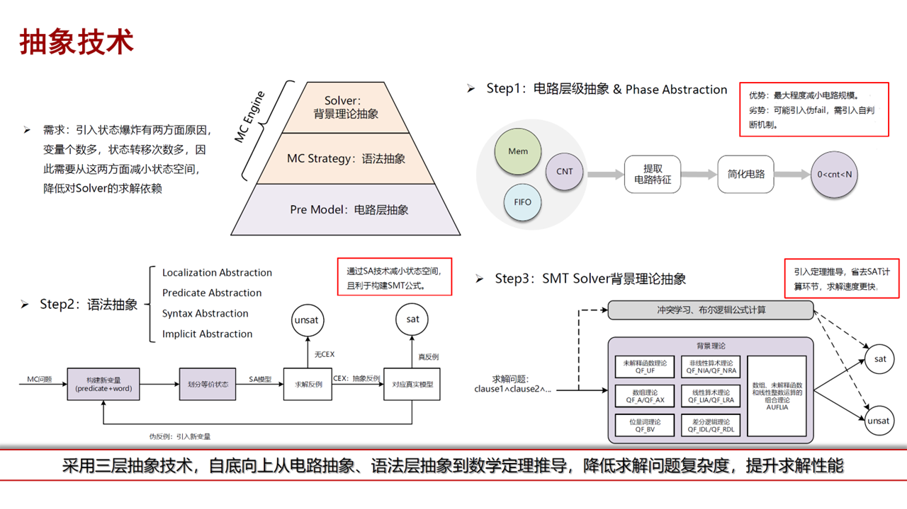
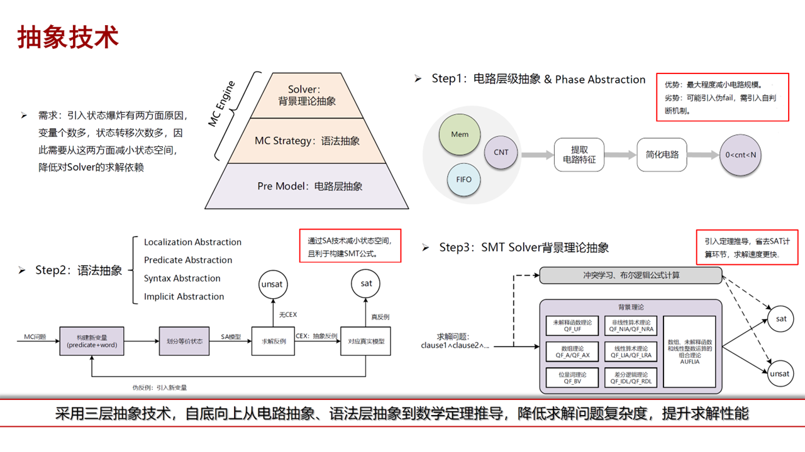

AI4Verification
很多EDA应用都可以通过抽象成SAT问题后直接调用SAT求解器求解，包括模型检测（Model Checking）、逻辑综合（Logic Synthesis）、逻辑等价性验证（Logic Equivalence Checking）、自动测试向量生成（Automatic Test Pattern Generation）等。但是，高性能的SAT求解器往往不等价于实际EDA问题可以被高效解决，其中原因包括复杂约束场景下的高质量的编码（建模）方法、求解友好的化简手段、与数据匹配的求解器或者求解算法选择等。
成员介绍
All of us are working on SAT-related algorithms in EDA, such as Automatic Test Pattern Generation (ATPG), Logic Equivalence Checking (LEC), Model Checking (MC). We all focus on both modeling and solving in practice.Introduction
利用专家知识和数据驱动解决形式化验证瓶颈。

2020-2021：集中于SAT-based ATPG解决方案，包括incremental SAT-based modeling and cube-and-conquer-style solving. 我们发现了SAT和ATPG算法在证明上的差异性，以及不同建模方法对证明的影响，但截至到目前为止，都只有少量工作对比了ATPG和SAT，并将ATPG用于LEC和MC中； 2.circuit-SAT的大部分工作都是将circuit信息放到CNF的推导中； 3. 基于SAT的证明方式主要进展集中于：preprocessing，增量求解等 ( 两种增量求解：a)增量SAT证明；b)cluster-based（bundle）); 4.Model checking开始引入word-level建模方式。
2011-2017年： 1.SAT求解提出cube-and-conquer：在这个框架基础上，部分数据的并行证明性能优于串行证明； 2.SAT-based证明的改进集中在encoding上； 3.代数方法开始用于LEC的运算电路证明中； 4.LEC和MC开始出现learning-based证明方案： a)LEC：自适应方案选择 b)MC：learning MDP。
2018年至今：1. 2018年提出NeuroSAT，后续几乎所有learning-based SAT都延续这个pipeline； 2. 2019年开始出现数据增广为核心的研究工作。2022年我们也分别尝试数据增广用于ATPG和LEC中； 3. 2022年提出从全局构建simulate DB，提高simulation质量，增强证明性能； 4. 2021-2022年Synopsys和Cadence分别有多个形式化验证相关的产品公开材料中以ML-driven框架为主要卖点之一。但主要将求解器当成黑盒，而主要工作用于动态调度、自适应求解器 or 算法选择上。
 

Survey
Survey
I'm interested in devleoping efficient models for computer vision (e.g. classification, detection, and super-resolution) using pruning, quantization, distilaltion, NAS, etc.
AI for SAT:
- Spatial-Channel Token Distillation for Vision MLPs
Yanxi Li, Xinghao Chen, Minjing Dong, Yehui Tang, Yunhe Wang, Chang Xu
ICML 2022 | paper - Federated Learning with Positive and Unlabeled Data
Xinyang Lin*, Hanting Chen*, Yixing Xu, Chao Xu, Xiaolin Gui, Yiping Deng, Yunhe Wang
ICML 2022 (* equal contribution) | paper
ML for SAT:
- GhostNets on Heterogeneous Devices via Cheap Operations
Kai Han, Yunhe Wang, Chang Xu, Jianyuan Guo, Chunjing Xu, Enhua Wu, Qi Tian
IJCV 2022 | paper | MindSpore code | Pytorch code - A Survey on Visual Transformer
Kai Han, Yunhe Wang, Hanting Chen, Xinghao Chen, Jianyuan Guo, Zhenhua Liu, Yehui Tang, An Xiao, Chunjing Xu, Yixing Xu, Zhaohui Yang, Yiman Zhang, Dacheng Tao
IEEE TPAMI 2022 | paper